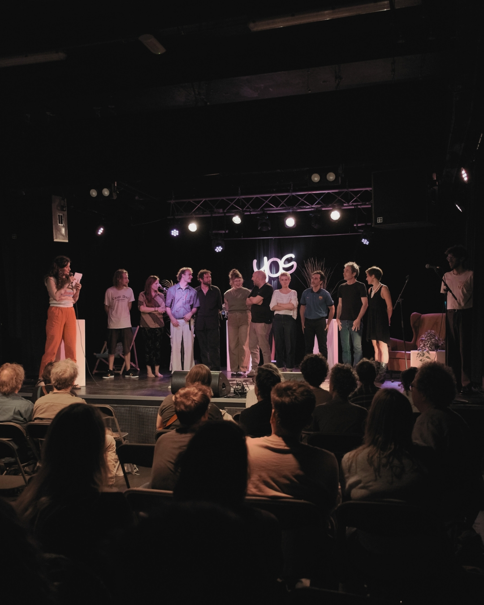
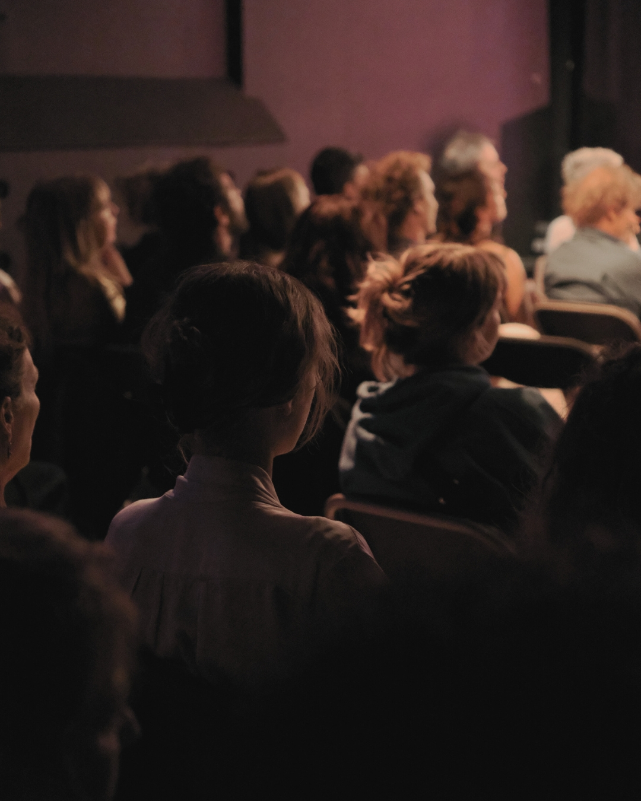
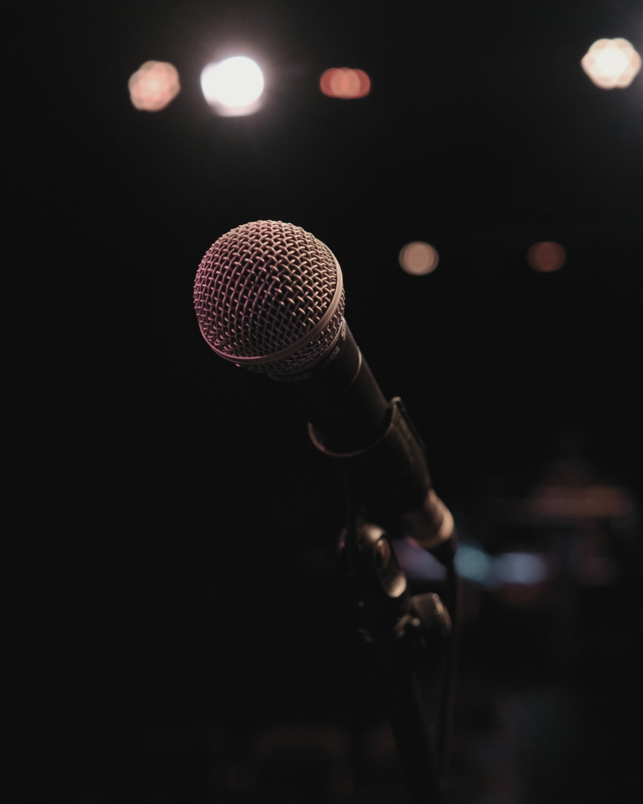
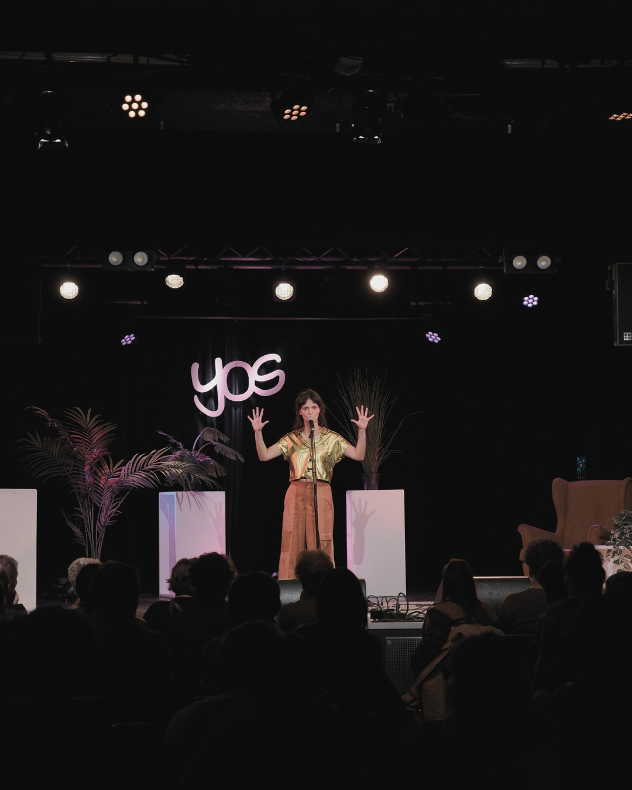
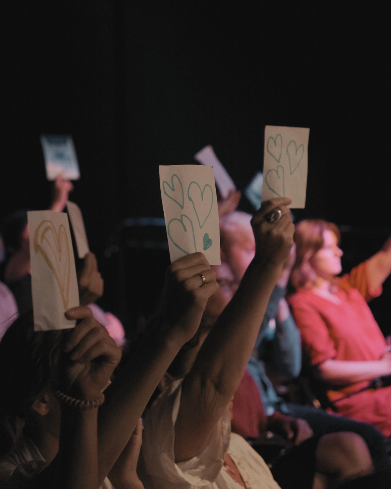
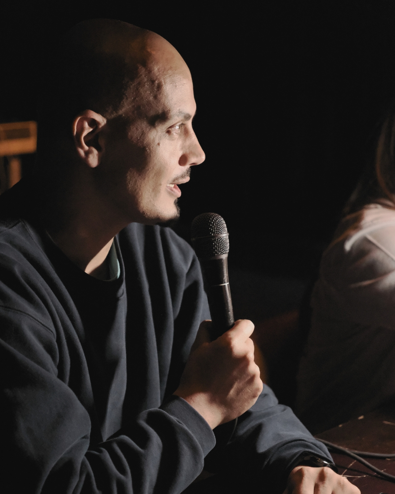

Workshop Poetry Slam Gent

Een workshop voor wie wil proeven van poetry slam, spoken word en podiumkunst. Voor beginners én ervaren makers.
schrijf je in →
Voor wie schrijft.
Voor wie voordraagt.
Voor wie zoekt.
Voor wie luistert.
Tussenwoorden is een platform voor woord, poëzie en podiumkunst. We brengen schrijvers, performers en publiek samen rond de kracht van taal.
Via workshops, open podia, evenementen en de Vlaamse voorrondes van het NK Poetry Slam bieden we ruimte aan nieuwe en ervaren makers.
Naast live evenementen ontwikkelen we een digitaal platform waar teksten, audio, video en andere vormen van woordkunst een plaats krijgen buiten het boek of podium.
Een initiatief van Humus vzw.
“Ruimte voor nieuwe makers.
Ruimte voor ervaren stemmen.
Ruimte tussen woorden.”
programma 2026

Een workshop voor wie wil proeven van poetry slam, spoken word en podiumkunst. Voor beginners én ervaren makers.
schrijf je in →
Werk aan tekst, stem en podiumpresentatie. We bouwen samen aan een set die klaar is voor de voorrondes.
schrijf je in →
De Gentse voorronde van het Nederlands Kampioenschap Poetry Slam. Schrijf je in en deel je tekst op het podium.
schrijf je in →
Turnhoutse voorronde van het NKPS. Twaalf performers, drie minuten per stuk, één podium voor nieuwe en ervaren stemmen.
schrijf je in →
De Antwerpse voorronde van het NK Poetry Slam. Een avond voor woord, performance en publiek.
schrijf je in →voor het eerst?
Dat is geen probleem. Onze workshops en voorrondes staan open voor zowel beginnende als ervaren makers.
Of je nu voor het eerst een tekst deelt of al jarenlang optreedt — Tussenwoorden biedt ruimte om te groeien, te experimenteren en andere makers te ontmoeten.
FAQ (binnenkort)binnenkort
Tussenwoorden ontwikkelt een digitaal platform waar teksten, audio, video en experimentele vormen van woordkunst gedeeld kunnen worden.